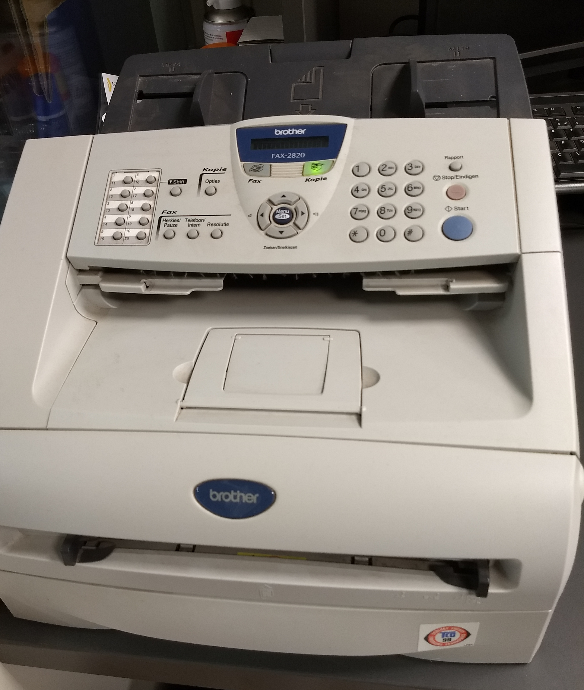
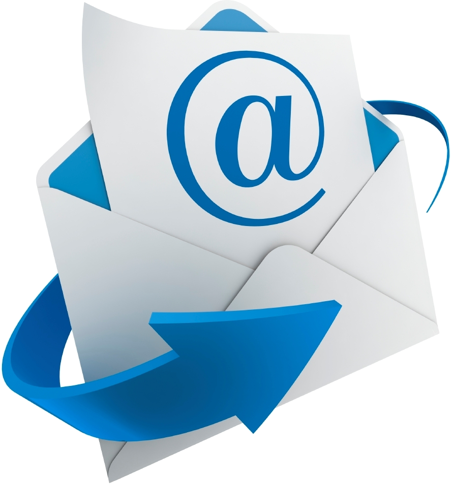

Durante siglos, enviar un mensaje a distancia implicó papel, sobres, estampillas y redes postales. Cada carta era un objeto material que viajaba de mano en mano hasta llegar a destino. Más tarde, tecnologías como el télex y el fax aceleraron la transmisión de textos, pero todavía dependían de equipos específicos, líneas dedicadas y, muchas veces, documentos impresos.

El correo electrónico cambió esa lógica al convertir la correspondencia en datos. Ya no fue necesario trasladar papel: bastó con una red, una dirección y un dispositivo capaz de conectarse. El mensaje pudo copiarse, reenviarse, archivarse y buscarse con enorme velocidad, integrando texto, imágenes, documentos y enlaces en un mismo canal de comunicación.

En el smartphone, el email se fusionó con otras herramientas que antes estaban separadas. Desde un mismo aparato hoy recibimos mensajes, adjuntamos fotos tomadas en el momento, firmamos archivos, agendamos reuniones, compartimos ubicaciones y saltamos de un correo a una videollamada o a un chat en segundos.
Esta convergencia resume una transformación profunda: el teléfono ya no solo transmite voz. También absorbió funciones del correo postal, del fax, de la agenda y de la computadora de escritorio, concentrando en el bolsillo una parte clave de la comunicación cotidiana y laboral.